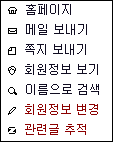

|
글쓴이 정보 확인 3. 4.1 부터는 관리자의 선택 여부에 따라서 글쓴이를 클릭하면 서브 메뉴가 레이어로 나타납니다. 3. 이는 회원/ 비회원의 여부와 관리자/ 일반 관리자의 여부에 따라서 메뉴가 다릅니다. 3. 다음은 관리자로 서브 메뉴를 볼때 입니다.  3. 위의 메뉴중 제일 아래 2개 빨간 메뉴는 관리자 전용 메뉴입니다. 3. 관리자 전용메뉴는 글쓴이에 대해서 추적하거나 불량 회원으로 판단, 레벨 변경등을 할때 바로 해당 3. 페이지로 이동할수 있으므로 매우 편합니다. |